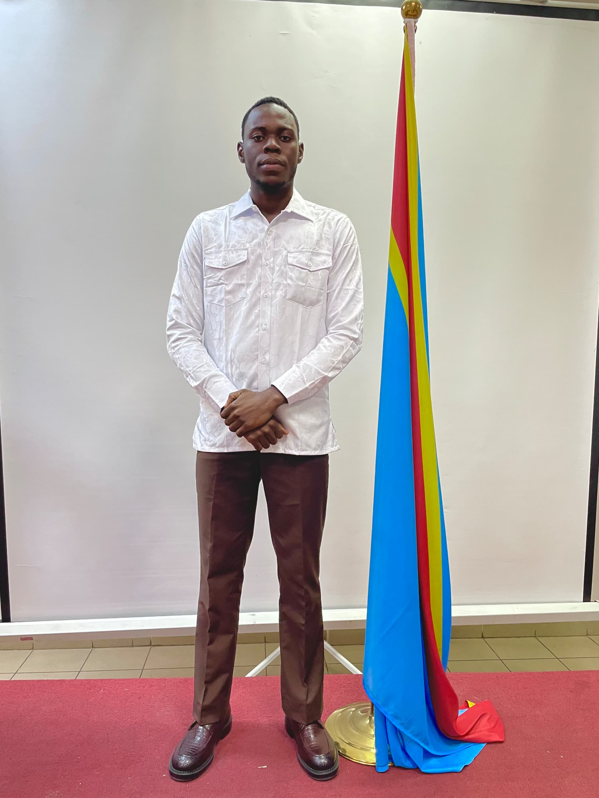
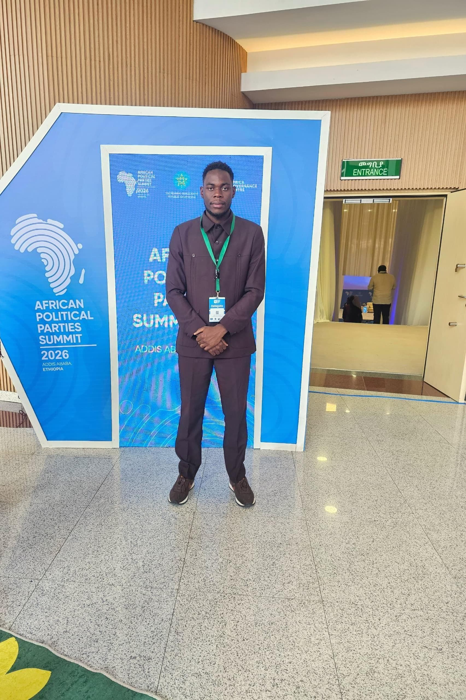
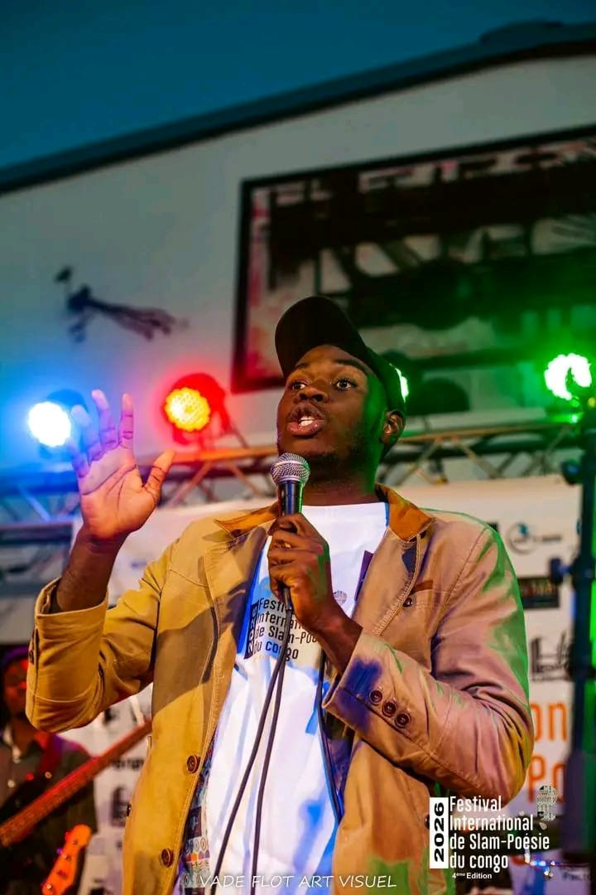
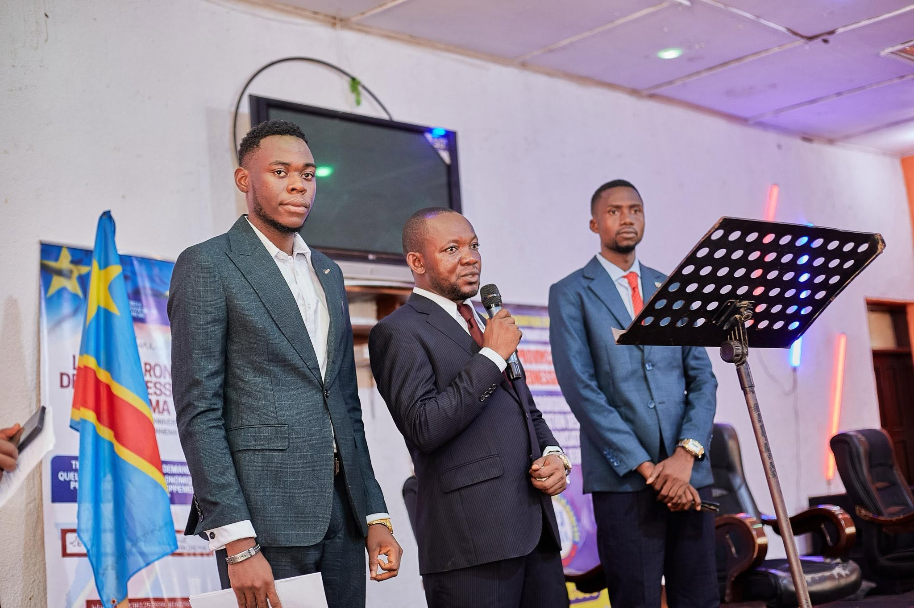

Formation académique
2021
Graduat en droit privé et judiciaire
Université de Kindu.

2023
Licence en droit privé et judiciaire
Université de Kindu.

Parcours professionnel et institutionnel
Mai 2021
Directeur des Projets du Collectif Maniem S'enflamme en Slam
Structure culturelle basée à Kindu : conception et mise en œuvre de projets de promotion du slam, de la poésie et de l'expression artistique auprès des jeunes.

19 janvier 2025
Élu Vice-président du Conseil provincial de la jeunesse du Maniema
Une responsabilité institutionnelle au service de la représentation de la jeunesse.

Collaboration
Ensemble, valorisons le potentiel de la jeunesse.
La jeunesse représente une force essentielle pour construire une société plus responsable, créative et engagée.
Entrer en contact